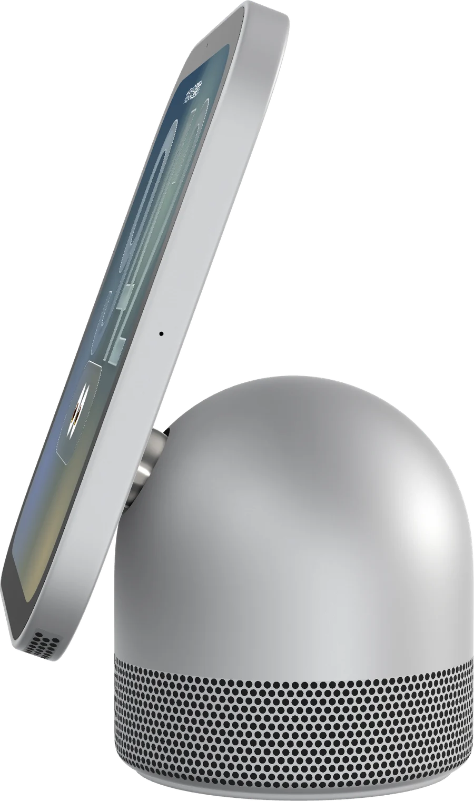
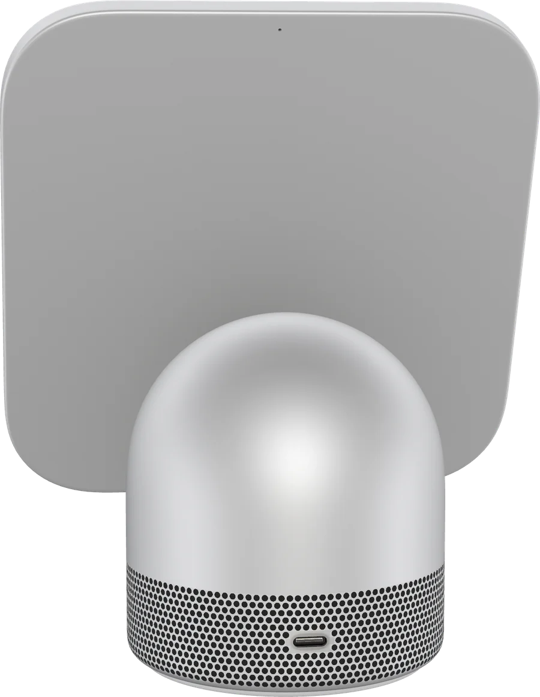
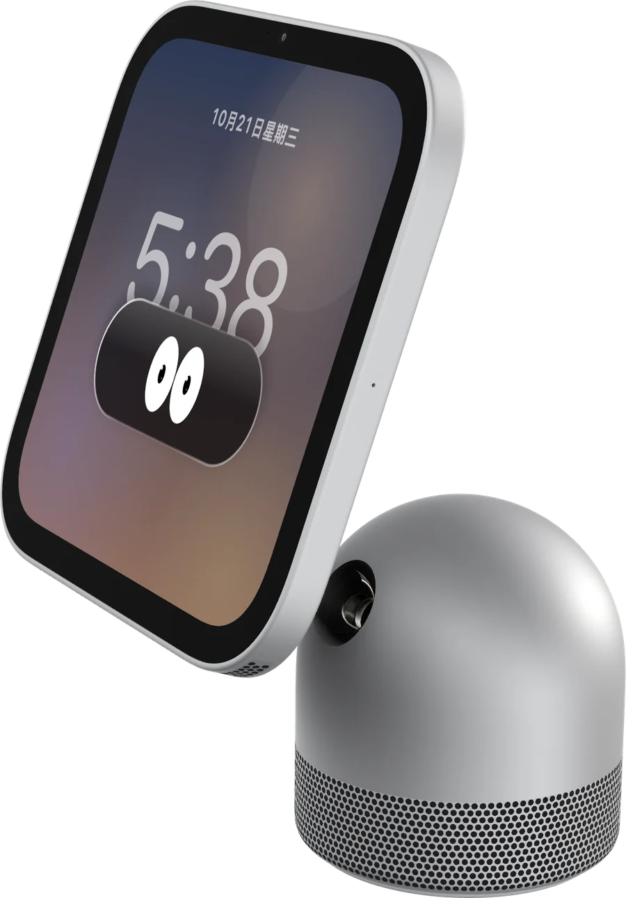
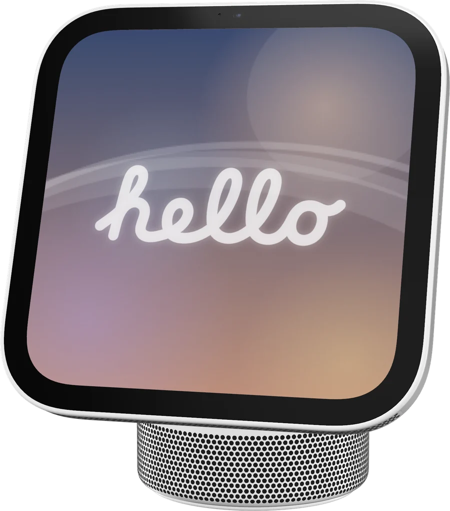
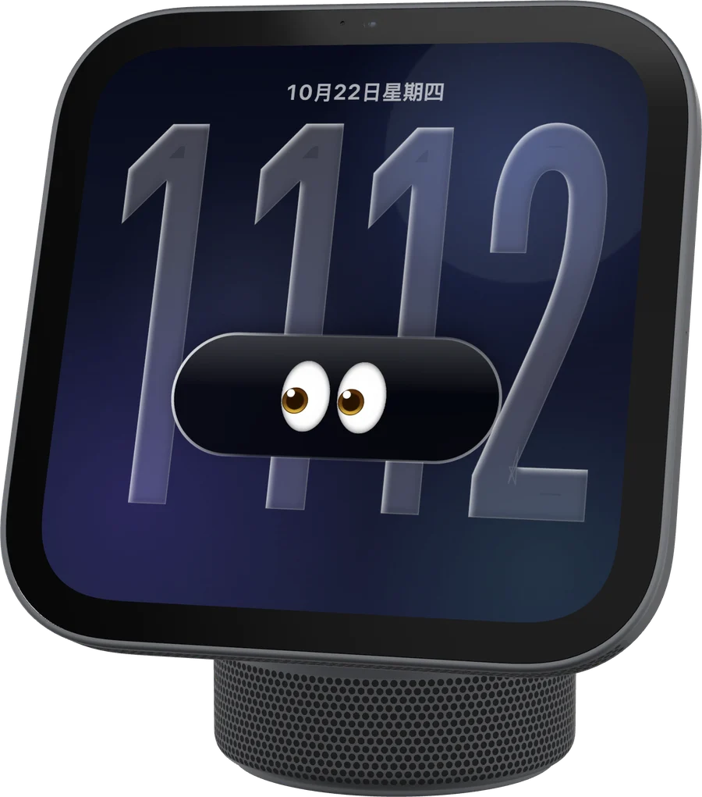
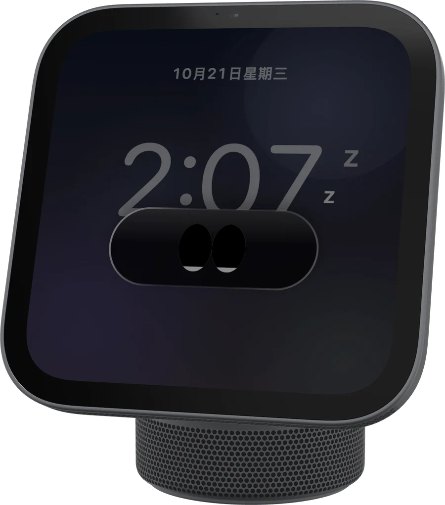

整體方向。沿用 WindowShade 與 AI System 6 官網的共同做法：首屏本身就是能玩的產品（WindowShade 是能收起的網頁桌面，AI System 6 是能開機的桌面），所有媒體本地載入、不放追蹤和遠端字型、文案只寫做得到的事。HomePlay 的「產品」是一個會看人的小東西，所以首屏放的是它本人，圖全部由 homeplay-pet --snapshot 現拍（site/scripts/render-media.py），沒有一張是手繪或假截圖。
語氣。Apple 消費品頁的克制排版，加一點桌寵的頑皮：表情、hello、睡著都是真功能，不是裝飾。中文首頁（台灣正體）＋ /en/。
Dial。變化 7／動態 6／密度 3。動畫只做三件事：首屏進場、表情回應游標、切換視角與外觀的過渡；不劫持捲動，「減少動態效果」下全部變成直接切換。
桌上一台小屏幕，會看著你。
HomePlay 是 Mac 上的 3D HomeView 桌寵。平常是時鐘和一雙眼睛；重按一下，屏幕上跑的是真的 CarPlay。
Hero 互動（照 README 的行為表，網頁版縮成四條）。游標離機身遠：idle；進到 160px 內：curious；停在機身上 1.5 秒：happy，4 秒：love；按下：機身縮 2.5%（跟 App 一樣）並 surprised 0.4 秒；1.5 秒內連點 5 下：focus。觸屏輕點等同按下。十張表情圖共用同一裁切框、同一分鐘拍攝，切換只換眼睛不跳機身。
首屏四個文字元素以內：標題、一句說明、兩顆按鈕。「看原始碼」連到公開倉庫；不放下載按鈕，因為不發安裝包。
它知道你在做什麼。
「島」只有一雙眼睛，十種表情全靠眼睛的形狀。把游標移到下面任一行，看它怎麼回應。
表情段。左邊固定一台（捲動時黏住），右邊九行觸發條件，懸停、鍵盤聚焦或手機點一下都會換臉。不用九張卡片排格子：行為表本來就是「你做了什麼 → 它的反應」，一行一條最好讀。文案全部取自 README 的表情表，不加沒有的行為。
重按，屏幕變成 CarPlay。
不是錄影、不是模仿介面。HomePlay 自己當 CarPlay 主機：iPhone 送來畫面和聲音，你在桌寵屏幕上點的每一下，都送回 iPhone。
iPhoneCarPlay
→
homeplay-receiver配對・RTSP・解密
→
桌寵屏幕H.264 畫面・AAC 聲音
無線
藍牙 iAP2 交換 Wi-Fi 資訊，再走會話控制面。需要配件身份，自己準備。
--source wireless
有線
插著線走 usbmuxd，不需要 Wi-Fi。
--source usb
一扇窗
抓 CarPlay Simulator 之類的視窗，開發時用。
--source window
CarPlay 段。全頁唯一的深色塊，但仍在同一主題內（面板，不是整段反轉）。沒有真 CarPlay 截圖可放（那是 Apple 的介面，而且舊證據圖是觸控測試格），改畫資料路徑：這段要講的本來就是「它怎麼接上」。三種來源對應 receiver 的 --source，auto 寫在跑起來那段。身份材料只說「自己準備」，公開倉庫不帶。
九件，轉得動，也拆得開。
鐘形底座、水平不鏽鋼鉸鏈、後仰 16° 的一整片薄屏幕。照真機比例做，地上不畫陰影。



拖動、兩指滑轉身體，只走一個軸
雙擊角度回正
雙指輕點兩下拆開、組回
捏合、⌘+ ⌘−縮放
重按進入 CarPlay
空格直播開關
拆開段。分段控制直接沿用 App 右鍵「視角」的四個選項和鍵 1–4（網頁上按數字鍵也能切）。手勢表兩欄六條，挑最有代表性的；完整列表在 README。
換一身外觀。
右鍵「外觀」切換，選了就記住。
G4 白
白色亮面清漆塑膠。屏幕走 Aqua 藍與凝膠光澤，游標靠近時會像向日葵一樣轉頭。
從早到晚都有樣子。
開機先說 hello
G4 白會先用手寫體寫一個 hello，向 Macintosh 致敬。

遠看是恆亮
整面暗、數字細；游標靠近才亮起來。

深夜會睡著
屏幕變暗、浮出 z，碰一下就醒。

外觀與三格。外觀段是唯一的左圖右字（hero 是左字右圖），之後的三格用不對稱寬度和三種底色，避免連續三段同一種排法。G4 白的致敬只寫一次（外觀說明 + hello 格），不重複。
自己編，自己跑。
沒有安裝包，原始碼就是全部。
- macOS 14 以上，Swift 6 工具鏈
- 只看桌寵：不需要 iPhone
- CarPlay：iPhone；無線另需 Wi-Fi 和自備的配件身份
# 編譯
swift build -c release
B=.build/release
# 只有臉
$B/homeplay-pet
# 接 CarPlay：插線走有線，沒插走無線
$B/homeplay-receiver --source auto --ssid '<Wi-Fi 名>' --port 8788
$B/homeplay-pet --endpoint ws://127.0.0.1:8788
先說清楚。
這是 Apple 的產品嗎？
不是。HomePlay 是個人實驗專案，跟 Apple 沒有關係，也沒有任何認證。CarPlay 與 HomeView 是 Apple Inc. 的商標，這裡只用來說明它做的是什麼。
為什麼沒有下載？
它是自用的實驗品，不發安裝包。原始碼公開，照上面的指令自己編譯。
無線 CarPlay 要什麼？
需要一份配件身份（identity.pk8 與 certificate.p7b），用 --identity-dir 指定。公開倉庫不附帶任何身份，來源與合法性由使用者自行負責。
用什麼授權？
GPL-3.0-or-later。CarPlay 會話控制面參考 MacPlay 與 LIVI 的行為重新用 Swift 實作，致謝寫在 NOTICE。
跑起來與 FAQ。指令全部取自 README，只留最短路徑。FAQ 四題是對外最需要講清楚的邊界：非 Apple、無安裝包、身份不隨公開倉庫、授權與致謝。頁尾只有 GitHub、授權、NOTICE、語言。